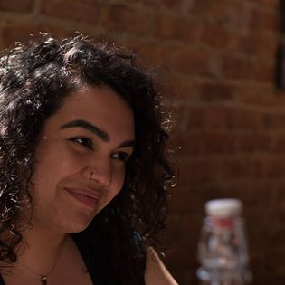

Michelle A. Limon-Newman
mlimon0789@gmail.com - 773.870.0282

Height: 5’1”
Mezzo-Soprano/Belter: E3 - A5 Belt or Legit
Hair Color: Dark Brown
Eye Color: Dark Brown
Theatre
Production: Karaoke Night… Role: Flyn Company: Coffee and Whiskey Productions
Production:Sweep Role:Eve/Hessa/Teresa Company: Coffee and Whiskey Productions
Production:Anything and Always Role: Courtney Company: Coffee and Whiskey Productions
Production:Karaoke Night… Role: Flyn Company: Coffee and Whiskey Productions
Production:Karaoke Night O.G. Role: Flyn Company: Chicago Fringe Festival - C&W Productions
Voice Over
Production: Immunities: Season 4 Role: Roxanne Company: Dueling Genre Productions
Production: Immunities: Season 3 Role: Roxanne Company: Dueling Genre Productions
Production: Immunities: Season 2 Role: Roxanne Company: Dueling Genre Productions
Production: Immunities: Season 1 Role: Roxanne Company: Dueling Genre Productions
Training
Kitty Karn - Vocal Performance
Voice Power Chicago - Vocal Performance
Western Illinois University - B.F.A Musical Theatre
Special Skills
Languages: Spanish (Fluent), German and ASL (Conversational)
Sports: MMA and Boxing Basic Training
Dance: Ballet, Jazz, Modern, Tap, Belly Dancing, Salsa and Bachata
Other: IL Drivers License, US Passport, Swimmer, Very good with Animals